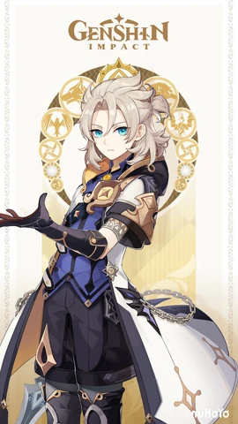

Mondstadt · Character Records
Albedo
Albedo is a homunculus created by Rhinedottir who serves as the Knights of Favonius’ Chief Alchemist. His work now includes the human-form Durin and research into Nod-Krai’s anomalous energy fields.

The Chalk Prince of Mondstadt
Albedo is the Knights of Favonius’ Chief Alchemist and a field researcher based in Mondstadt. He spends long periods studying Dragonspine, with Sucrose assisting his work. The title ‘Chalk Prince’ is part of his story and event framing; it should not be mistaken for an office or a full explanation of his origin.
His calm, methodical manner is paired with an unusually personal research question: what does it mean to be alive when one’s own life began through alchemy? His character stories and quests return to the responsibilities that come with creating or changing life.
Rhinedottir’s creation and assignment
Albedo is an artificial human, or homunculus, created by the Khaenri’ahn alchemist Rhinedottir, also known as Gold. She was his master and teacher. She sent him to Mondstadt with a request to discover ‘the truth and the meaning of this world’; later, she acknowledged that he had found an answer she could accept.
That exchange confirms a meaningful bond and a research assignment, but it does not disclose Rhinedottir’s complete purpose or explain every detail of Albedo’s body. The game’s descriptions of Khaenri’ahn alchemy establish that life can be made through her art without giving a full account of its limits.
Dragonspine, Durin, and the three subjects
The original Durin was a dragon created by Rhinedottir. His attack on Mondstadt ended on Dragonspine, where his remains and still-beating heart became part of the mountain’s history. Albedo studies this legacy as both an alchemist and someone whose creator also made Durin.
The event ‘Shadows Amidst Snowstorms’ identifies Albedo as Subject One, Rhinedottir’s successful creation. Subject Two was a failed prototype that survived, was swallowed by Durin, and later returned able to impersonate Albedo; Albedo confronted and killed it. A Whopperflower altered by alchemy and dragon blood appears as Subject Three. These labels describe distinct beings, not three names for Albedo.
A new human form for Durin
The later interlude ‘Paralogism’ brings together the original Dragonspine Durin and the small dragon from the storybook world of Simulanka. The Hexenzirkel helps make a transformation possible, and Albedo uses the original Durin’s heart alongside the other required ingredients to give Mini Durin a human body.
Albedo calls the resulting Durin his brother. This is a new person whose storybook life and chosen identity continue, joined to the original Durin’s remains and power; it is not simply the old Dragonspine dragon returning unchanged.
Durin’s story is still being written
In ‘The Magic Known as Storytelling,’ Albedo offers a working explanation for why Durin’s connection to the storybook world matters. He suspects that Durin’s story remains entangled with the book and that a weakening link may cause people to forget him while his Abyssal power becomes harder to control.
The quest presents this as Albedo’s theory, not a complete rulebook for storybook magic. Durin chooses to pursue a future beyond the book’s existing script, and the people around him support that choice.
Albedo’s current work in Nod-Krai
In ‘A Traveler on a Winter’s Night,’ Albedo joins the Wanderer and Durin to examine Dottore’s energy fields. By comparing Geo, Anemo, and Durin’s unusual power, he concludes that the fields are made of Light Realm energy and can be weakened by elemental force. The group enters the field and discovers that people’s minds have been exchanged with animals.
Albedo and the Wanderer investigate while Durin keeps watch. Afterward, Albedo stays in Nod-Krai to help Sandrone with her research. This is his latest documented assignment; it does not establish that he knows Dottore’s entire plan or that Rhinedottir directed this work.
Relationships and what others know
Albedo is trusted by the Knights of Favonius, works closely with Sucrose, and is treated by Klee as an older brother. These relationships give his life in Mondstadt a practical and affectionate side alongside his solitary research. His origin and the Subject Two incident are not ordinary public knowledge for everyone in the city.
When reading his story, keep his direct observations separate from deductions he makes as a researcher. A plausible alchemical explanation or a theory about Durin can be well supported without becoming a universal law of Teyvat.
What remains unresolved
The story has not specified the full process that made Albedo, the limits or lifespan of a homunculus, or Rhinedottir’s complete goal for her creation. It also has not resolved every consequence of Albedo’s connection to Durin or what his latest research will reveal.
Rhinedottir’s appearances in newer story material do not, by themselves, confirm a new instruction to Albedo or a change to his nature. The linked quest records distinguish what the game shows from what remains speculation.
This is an original CoreGG reading guide, not an official HoYoverse article or a reproduction of the game text. Source links below identify the records used so you can check the original context.
Sources & references
Check these sources for the original game text and reference trail.